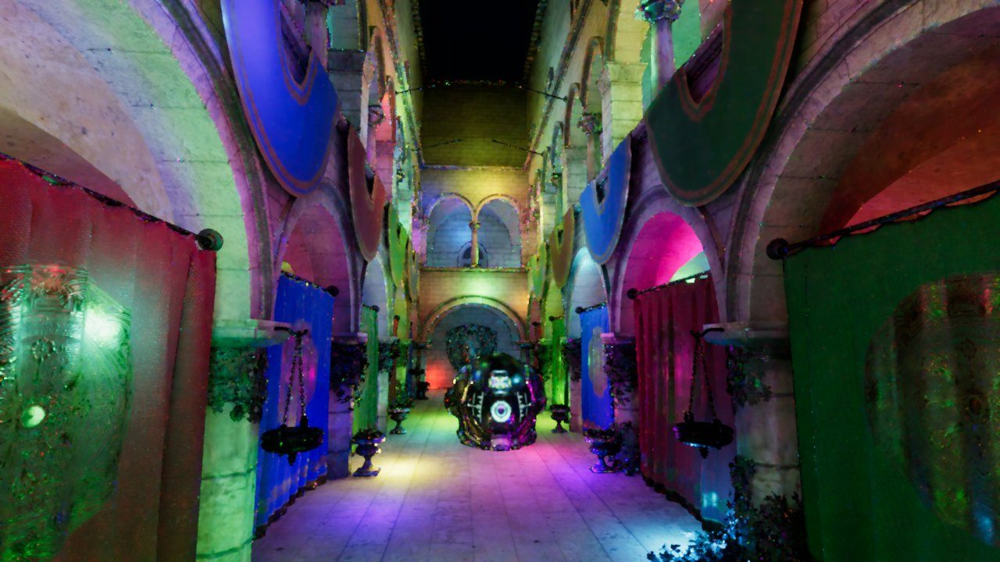
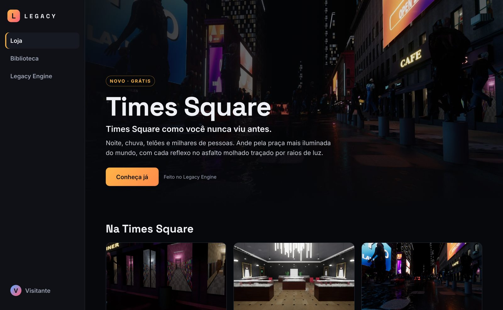
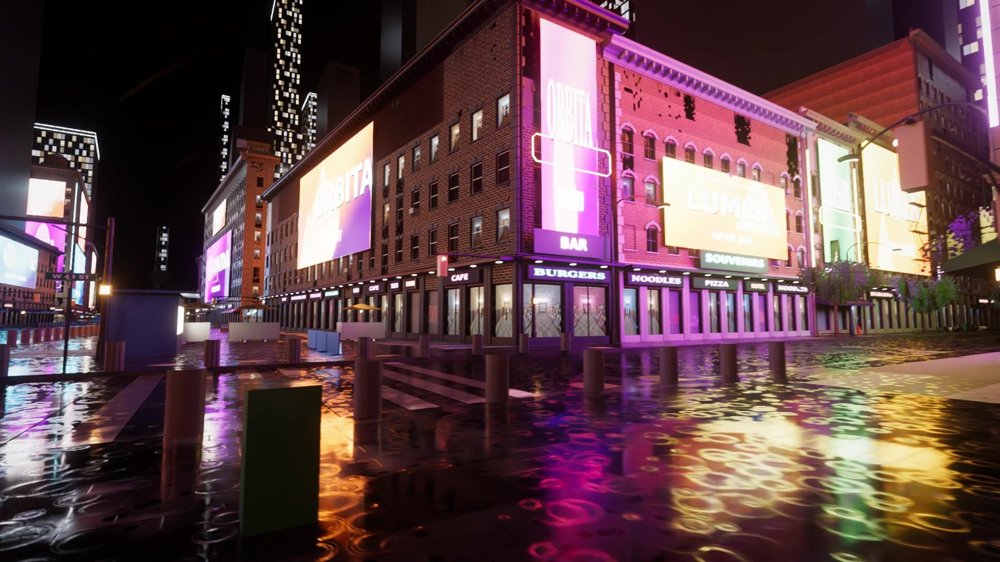
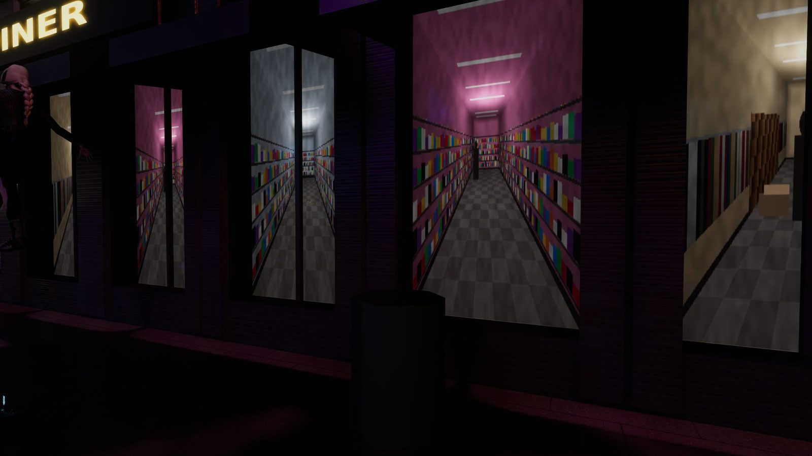
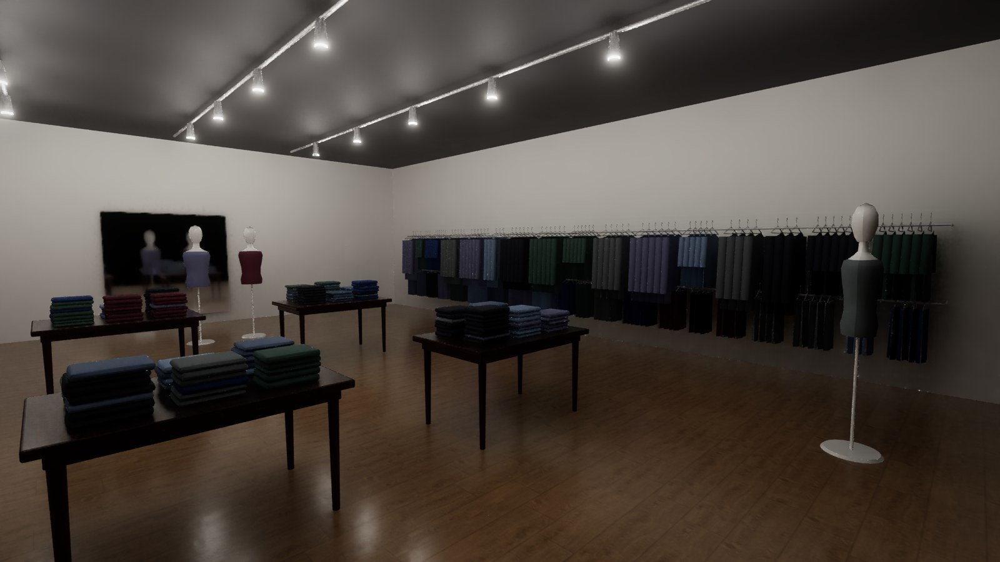
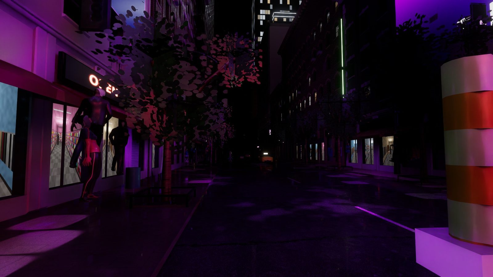
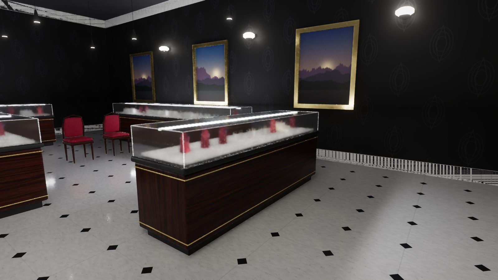
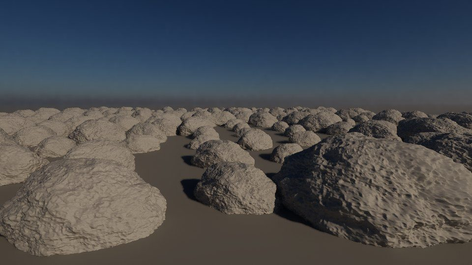
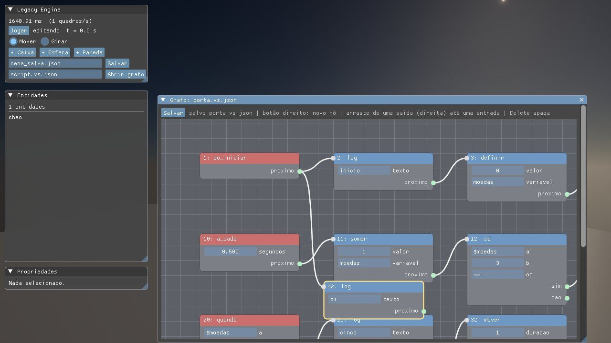

Mil luzes, todas com sombra
Todo objeto que emite luz ilumina a cena de verdade, sem pré-cálculo e sem limite de quantidade.

Windows LEGACYÉ por ele que você baixa a Times Square e o Legacy Engine, entra com a sua conta Legacy e recebe as atualizações sozinho.
Ande pela praça mais iluminada do mundo numa noite de chuva. Cada telão, cada letreiro de neon e cada poste é uma luz de verdade, e o asfalto molhado reflete tudo.





Imagens capturadas no Legacy Engine, numa NVIDIA RTX 3070 Ti, qualidade Alto. A Times Square está em desenvolvimento: novas áreas e melhorias chegam pelo launcher.
Um motor em C++ e Vulkan com ray tracing em todo pixel. Cada sistema de luz é comparado automaticamente com uma simulação física de referência (path tracing); se desviar, o teste falha.
Reveal do Legacy Engine · capturado no Legacy Engine numa NVIDIA RTX 3070 Ti

Todo objeto que emite luz ilumina a cena de verdade, sem pré-cálculo e sem limite de quantidade.

Milhões de triângulos por quadro, com nível de detalhe automático, e as sombras e reflexos continuam vendo cada triângulo.

Arraste o sol, acenda uma luz, derrube uma parede: sombras, reflexos e luz global se atualizam no mesmo quadro.
¹ Cena Bistro (Amazon Lumberyard, CC BY 4.0), 1920×1080, preset Médio, RTX 3070 Ti: 16,7 ms por quadro; erro = diferença média de luminância contra path tracing de 512 quadros. ² Bistro à noite, luzes de malha. ³ Campo de rochas: G-buffer em 4,1 ms contra 24,7 ms da malha completa, RTX 3070 Ti. Requer placa de vídeo com ray tracing (NVIDIA RTX 20xx ou mais nova, AMD RX 6000 ou mais nova, Intel Arc) e conta Legacy.
Sim. O Legacy Launcher e a Times Square são gratuitos.
Windows 10 ou 11 de 64 bits e uma placa de vídeo com ray tracing: NVIDIA RTX 20xx ou mais nova, AMD RX 6000 ou mais nova, ou Intel Arc. Para a Times Square na qualidade Média em 1080p, a referência é uma RTX 3070 Ti (cerca de 36 quadros por segundo).
Para jogar a Times Square, não: entre como visitante. A conta Legacy (só e-mail, senha e um username) guarda sua biblioteca e suas configurações em qualquer computador e é necessária para o Legacy Engine.
Automáticas. O launcher se atualiza sozinho e, quando um jogo tem versão nova, baixa só os arquivos que mudaram. Seus saves e configurações não são tocados.
Guardamos só o necessário para a conta funcionar (e-mail, username e as configurações que você salvar). Não vendemos dados. Você pode apagar a conta e tudo dela a qualquer momento no próprio launcher. Detalhes na Política de Privacidade.
O aviso aparece com programas novos que ainda não têm assinatura digital paga. Baixe sempre por este site (o arquivo vem do GitHub oficial do projeto). Na janela do aviso, clique em "Mais informações" e depois em "Executar assim mesmo".
Escreva para equipe@legacyengine.com.br.